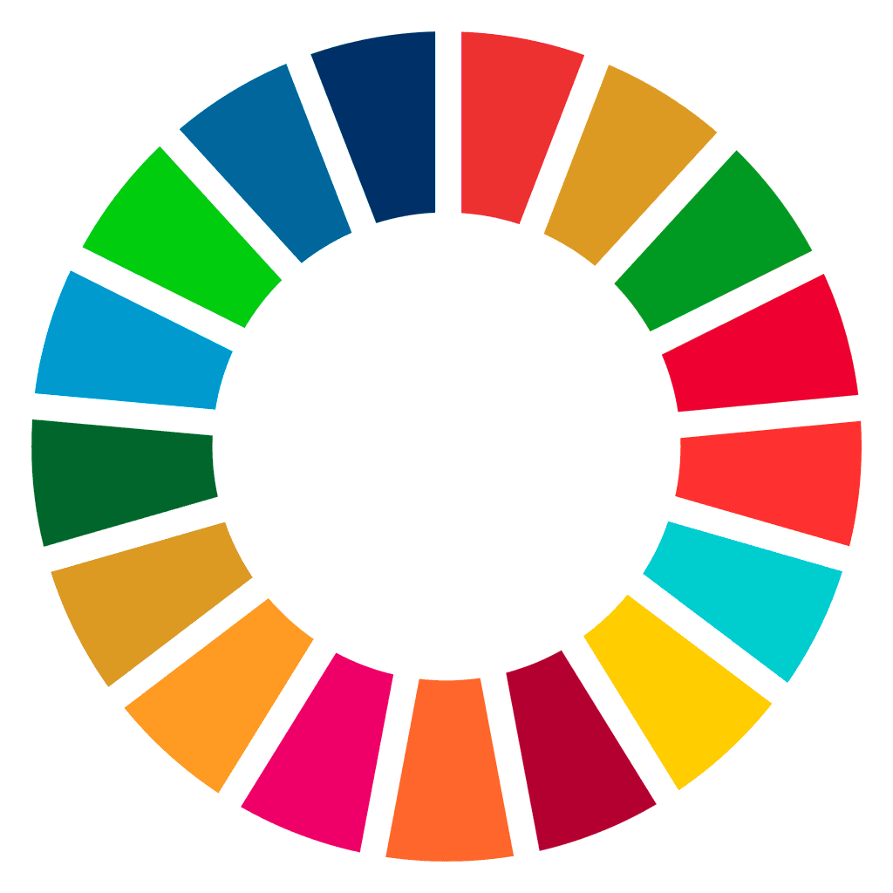

Els vuit primers Objectius de Desenvolupament Sostenible

Els objectius:
ODS 1. Fi de la pobresa: Posar fi a la pobresa en totes les seves formes a tot arreu.
ODS 2. Fam zero: Posar fi a la fam i la inanició, aconseguir la seguretat alimentària, millorar la nutrició i promoure una agricultura sostenible.
ODS 3. Salut i benestar. Garantir una vida sana i promoure el benestar per a totes les edats.
ODS 4. Educació de qualitat: Garantir una educació inclusiva per a tots i promoure oportunitats d'aprenentatge duradores que siguin de qualitat i equitatives.
ODS 5. Igualtat de gènere: Aconseguir la igualtat de gènere a través de l'enfortiment de dones adultes i joves.
ODS 6. Aigua neta i sanejament. Garantir la disponibilitat i una gestió sostenible de l'aigua i de les condicions de sanejament a tothom.
ODS 7. Energia neta i assequible: Garantir l'accés de totes les persones a fonts d'energia assequibles, fiables, sostenibles i renovables.
ODS 8. Treball digne i creixement econòmic: Promoure un creixement econòmic sostingut, inclusiu i sostenible, una ocupació plena i productiva, i un treball digne per a totes les persones.
Aquest link no porta enlloc.
Escriptors actuals:
Neal Shusterman
Hannu Rajaniemi
Emma Newman
Eric Nylund
Nobuyuki Fukumoto